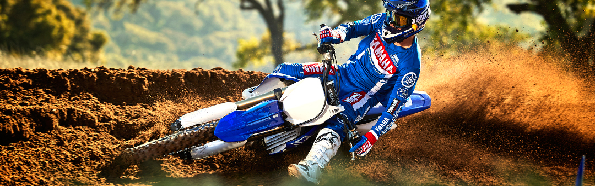

Equipped with the most advanced performance-boosting technology in its class, the YZ250F’s all-new engine is the most powerful production 250cc 4-stroke ever manufactured by Yamaha.
Its new lightweight electric starter saves valuable seconds when it matters – and with Yamaha’s exclusive Power Tuner app and adjustable mapping, it’s easy to choose the exact power profile for optimum race results at every track.
The compact new chassis increases agility – and new suspension systems deliver winning performance with class-leading feel. So expect more. Because the all-new Yamaha YZ250F gives you the highest level of tuneable performance ever seen in the 250cc class.
Innovative and Upgraded Engine
The liquid-cooled, DOHC 4-valve, fuel-injected engine features a forward-positioned straight downdraft intake with symmetrical intake and exhaust ports. A high-compression piston works with intake and exhaust cam timing to deliver outstanding engine character with a focus on top-end power delivery.
Exclusive Power Tuner App
Breaking new ground in the industry – again – Yamaha created the Power Tuner app, which brings the power of the GYTR Power Tuner to your iOS® or Android® device. Using wireless connectivity to talk to the bike’s onboard CAN-bus network, the app allows owners to adjust air/fuel mixture and ignition timing maps to tune engine performance for track conditions, record race log information, and monitor a range of data such as maintenance and system diagnosis, engine run time, and more.
Electric Starter System
The YZ250F features a compact electric starter system to minimize restart delays on track and add convenience everywhere else. Powered by a high-capacity and ultra-lightweight, four-cell lithium-ion battery, the system adds minimal weight.
Adjustable Engine Maps
Two-mode adjustable engine mapping allows the rider to adjust engine character with the push of a button, making it easy to tune the YZ250F for changing track or weather conditions.

Piston, Rod and Crankshaft Balance
A flat-top forged piston features a bridge-box design for additional strength with minimal weight. The piston, rings and DLC-coated piston pin, along with the offset cylinder configuration, all reduce friction loss and contribute to quick response. The engine’s intake ports, cam profiles, high-strength connecting rod and optimized crank and counterbalancer all work together to produce potent high-rpm power with user-friendly delivery and exceptional reliability.
Advanced Fuel Injection
The adjustable fuel injection system uses a 44mm throttle body, fed by a high-pressure electric fuel pump, injects fuel through a 12-hole Denso® injector. This ensures optimum fuel atomization and air/fuel calibration for excellent rideability in a wide range of riding conditions.
Wraparound Rear Positioned Exhaust Layout
An innovative exhaust pipe design improves mass centralization and power development characteristics. This layout moves the rear end of the exhaust pipe farther forward and positions the muffler closer to the bike’s center of mass.
Enhanced Cooling
Lightweight radiators are larger and angled more directly in the incoming air stream, for improved cooling under the most demanding race conditions. Inside the engine, the high-flow impellor and water pump boost endurance and durability under the toughest racing conditions.
Durable Transmission
The transmission gears, dogs and shift mechanisms are designed to smooth gear changes and improve durability under the heavy demands of motocross racing. The YZ250F also features a large-diameter clutch to boost reliability even further under high-heat conditions.